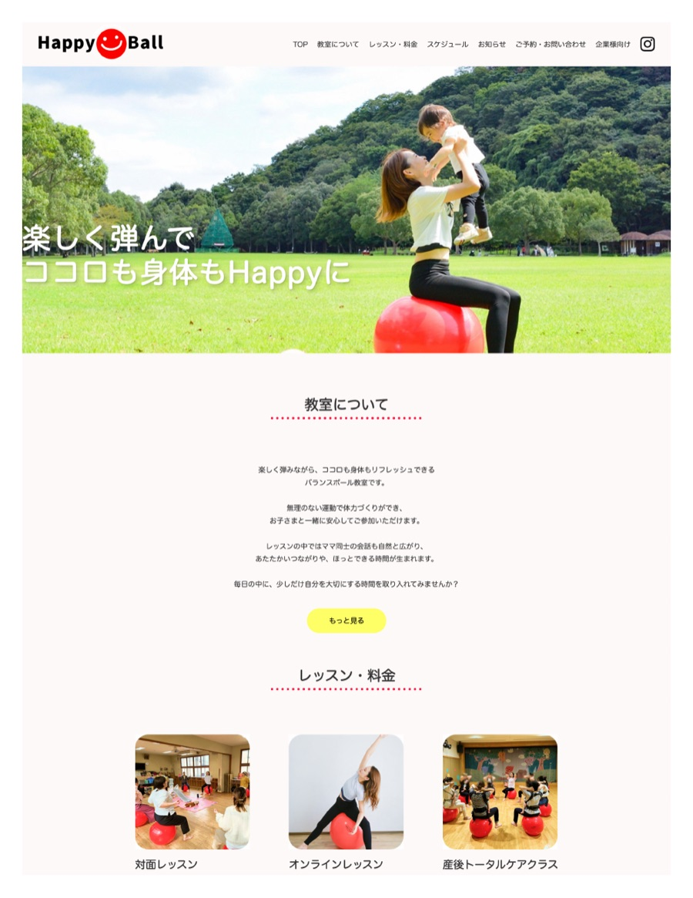

WORKS — LP・Webデザイン
Happy Ball
Works 一覧に戻る

制作背景
親子向けバランスボール教室「Happy Ball」のWebサイト制作を担当しました。SNSでの発信はあったものの、サービス全体をまとめて伝える導線が不足しており、新規のお客様が教室の雰囲気・料金・予約方法を一か所で確認できるWebサイトが必要とされていました。
課題
教室の温かな雰囲気をビジュアルで伝えながら、「教室について」「料金」「ご予約」という3つの重要な情報を自然な流れで案内すること。また、スマートフォンからのアクセスが多いため、モバイル表示での見やすさも重視しました。
アプローチ
ファーストビューで教室の世界観（やさしさ・楽しさ・安心感）を打ち出し、スクロールに沿って「教室紹介 → 料金 → 予約」と自然に誘導するLP構成を採用しました。
カラーはビビッドな色を避けてパステルトーンで統一し、親子が安心して参加できる場の雰囲気を演出しました。CTAボタンを各セクションの末尾に配置することで、どの位置から閲覧しても予約に進みやすい設計にしています。
工夫した点
余白を広く取り、詰め込みすぎないレイアウトにすることで「読みやすく・伝わりやすい」ページを意識しました。また、予約ボタンの色を際立たせ、コンバージョンポイントへの視線誘導を明確にしました。